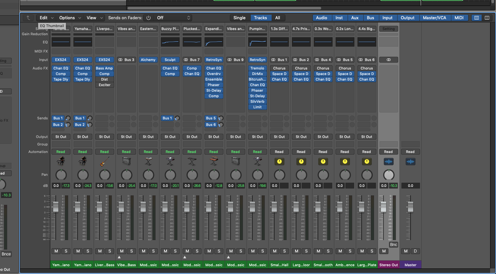
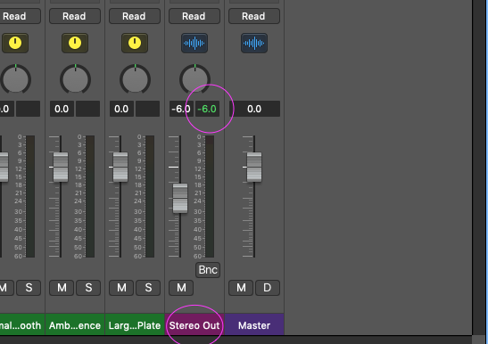
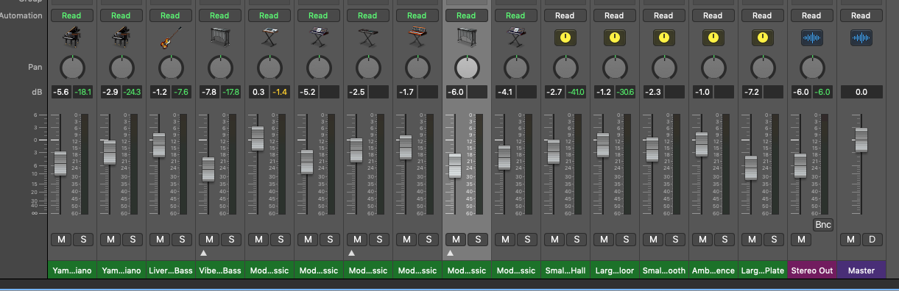

MIXING
Basic mixing
1) Befor unloading your song to soundcloud, spotify, youtube...
2) You should mix your song.

1. Set Stereo Out volume
1) For mixing, Stereo Out volume should be placed at -6Db
2) The reason is to master your mix version.
3) In mastering part, we will fill the rest 6Db.

1) Moderate your volume of instruments to fit the -6Db
2) Usually Drum part is the strong part in your song(almost -13Db)
3) First mix the most important part in your song

Add)
There's numerous things to learn in mixing
so I hope you study mixing more in this way
-->volume, EQ, Compressor,reverb, delay, image, lowend, highend,
reference, saturation. resonance